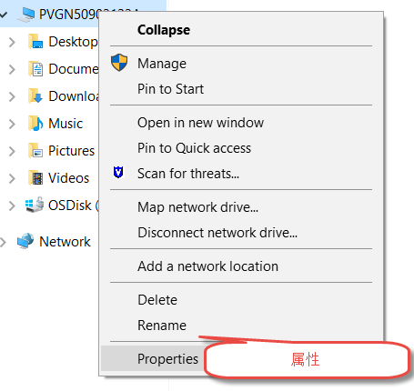
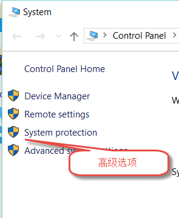
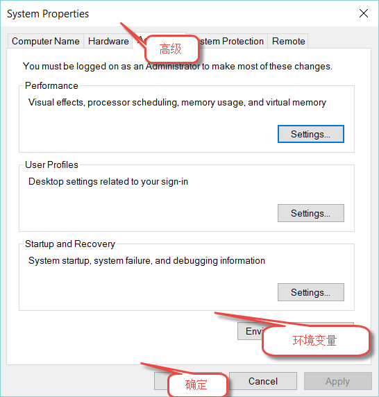
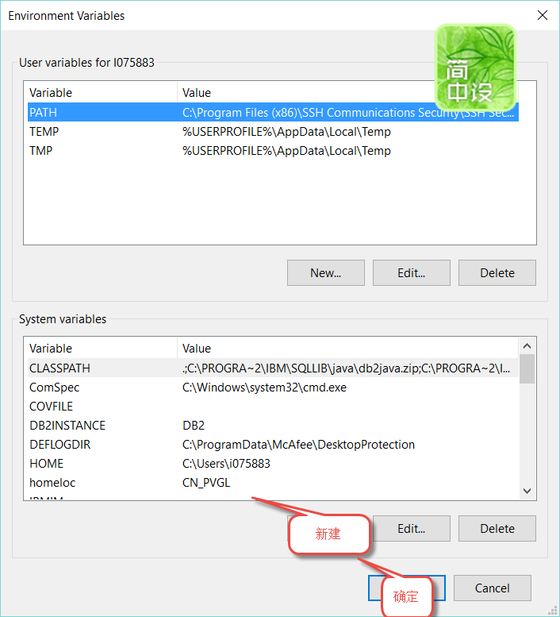
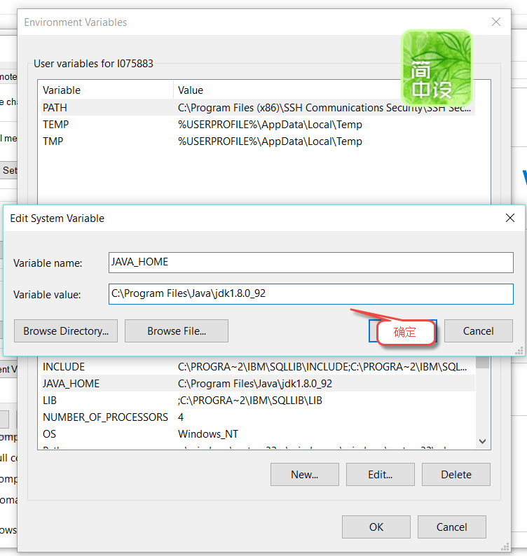

注意，图上的箭头指向是没有意义的，图片上的中文注释是用来覆盖英文的
选中我的电脑，点击鼠标右键，在弹出的菜单中，点击属性

在弹出的对话框上，点击高级选项

点击环境变量

点击添加

在弹出的对话框录入JAVA_HOME和JDK安装的路径
不同版本的JDK安装路径会有差别，我用的是C:\Program Files\Java\jdk1.8.0_92，你需要到你机器的C:\Program Files\Java\目录下查找C:\Program Files\Java\jdk1.8.0开头的路径

点击确定，保存修改